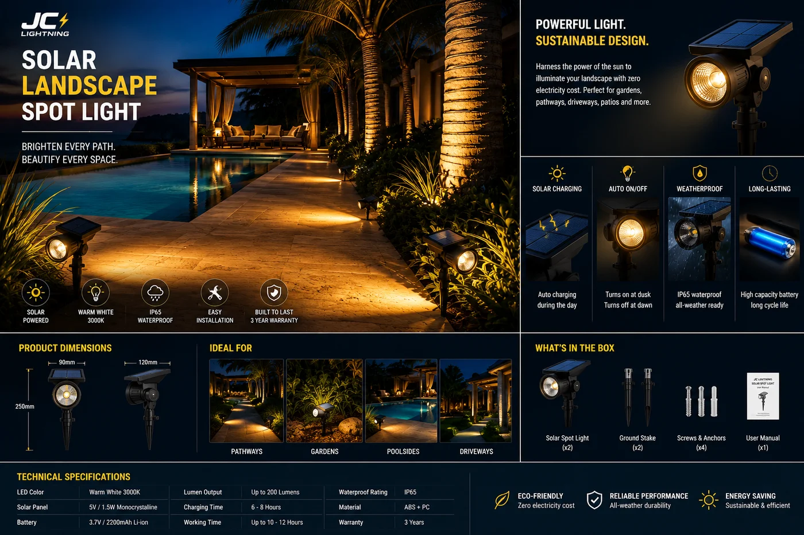

太阳能花园插地射灯
用于树木照明与立面点缀的可调插地射灯——5W、400 流明,360° 旋转加 90° 俯仰,IP65,3000K/6000K 可切换。

这是景观师做点缀照明的利器。插地杆几秒插入土中,360° 旋转加 90° 俯仰让一盏灯既能向上照树、又能扫墙或突出某个景观焦点。可切换色温(暖 3000K 或冷 6000K)契合不同氛围,IP65 让它四季常运行——全靠免费的太阳能。
规格参数
| 功率 | 5W |
|---|---|
| 光通量 | 400 lm |
| 可调节性 | 360° 旋转 + 90° 俯仰 |
| IP 防护等级 | IP65 |
| 电池 | 1200mAh |
| 续航时间 | 每次充电 8 小时 |
| 色温 | 3000K / 6000K 可切换 |
| 认证 | CE + RoHS |
为什么选它
随意瞄准。360° 旋转与 90° 俯仰让一个 SKU 适用于树木、墙面与景观点缀。
两种色温。暖 3000K 营造氛围或冷 6000K 锐利点缀——现场由买家定。
免工具安装。插地式、无需布线——景观师一个下午即可布满整座花园。
已认证、支持 OEM。每份报价附 CE + RoHS;可定制品牌与包装。
为这些市场而建澳大利亚、西班牙、拉美和南部非洲的景观、酒店与住宅项目——几分钟即可安装的灵活点缀照明。